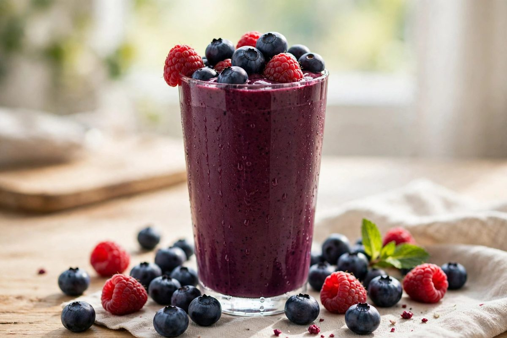

Home » Guides
Berry Smoothies

Berries are the perfect smoothie fruit: they are sweet, colourful, rich in vitamins and fibre, and relatively low in sugar compared with mango or banana. Strawberries, blueberries, raspberries, and blackberries all blend beautifully, and frozen berries are often better than fresh for smoothies because they are picked ripe, cheaper out of season, and make the drink thick and cold without ice. This guide covers choosing berries, the best combinations, and recipes for every occasion.
Why berries work so well
Berries are high in fibre and vitamin C, and they contain plant compounds called anthocyanins, which give them their deep colour and act as antioxidants. They are lower in sugar than many fruits: a cup of raspberries has about five grams of sugar, compared with about fourteen grams in a cup of mango. Their tartness balances sweet ingredients like banana and yoghurt, and their colour makes a smoothie look appealing. Because they are small and soft, they blend quickly and smoothly, even in a basic blender.
Fresh or frozen berries
Frozen berries are usually the better choice for smoothies. They are frozen at peak ripeness, so they keep their flavour and nutrients, and they are available all year at a steady price. They also make the smoothie thick and cold, so you do not need ice. Fresh berries are best when they are in season and you want to eat them as a topping. If you use fresh berries, add a handful of ice to thicken and chill the smoothie. Always wash fresh berries well, and check frozen berries for any ice crystals that suggest they have thawed and refrozen.
Three berry smoothie recipes
A classic berry smoothie blends a cup of frozen mixed berries, one banana, 150 grams of Greek yoghurt, and 200 millilitres of milk. A blueberry and oat smoothie blends a cup of blueberries, 40 grams of oats, 150 grams of Greek yoghurt, and 200 millilitres of milk, with a teaspoon of honey if you like. A raspberry and chocolate smoothie blends a cup of raspberries, one tablespoon of cocoa powder, one banana, and 200 millilitres of milk. Each recipe makes one large serving and takes under five minutes.
Berry smoothie variations
Berries pair well with many flavours. Add a tablespoon of peanut butter for a peanut butter and jelly smoothie, or a handful of spinach for a berry green smoothie that still tastes like berries. A squeeze of lemon brightens the flavour, and a few mint leaves add freshness. For a dessert-style smoothie, add a scoop of vanilla ice cream, but keep it as an occasional treat. For a lighter version, use water or coconut water instead of milk and skip the banana. Berries also make good smoothie bowl toppings, arranged over a thick banana base.
Berries through the year
Berries are seasonal, but frozen berries make them available all year. In summer, buy fresh berries when they are cheap and plentiful, and freeze the extra in a single layer on a tray before bagging them. In winter, rely on frozen berries, which are picked ripe and frozen quickly, so they keep their flavour and nutrients. Keep two or three types in the freezer, such as blueberries, raspberries, and mixed berries, so you can vary your smoothies. A bag of frozen berries costs less than fresh out of season, and it means a berry smoothie is always possible.
Frequently Asked Questions
Are frozen berries as healthy as fresh?
Yes. They are frozen at peak ripeness and keep their vitamins well. In some cases they are more nutritious than fresh berries that have travelled for days.
Which berry is best for smoothies?
There is no single best berry. Blueberries are sweetest, raspberries are tartest, and mixed berries give the best balance of flavour and colour.
Can I use berries with seeds in a smoothie?
Yes. Raspberries and blackberries blend well, though some people notice the small seeds. Straining is rarely worth the effort.